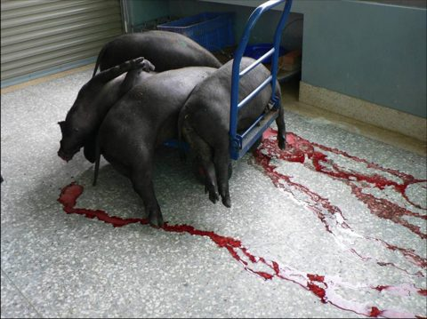
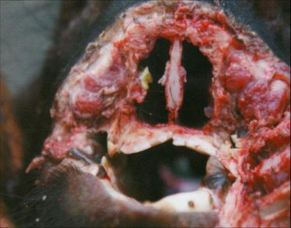
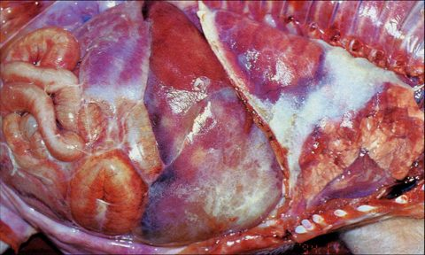
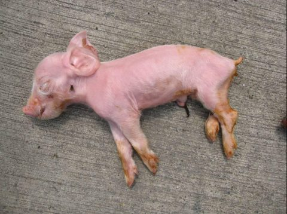
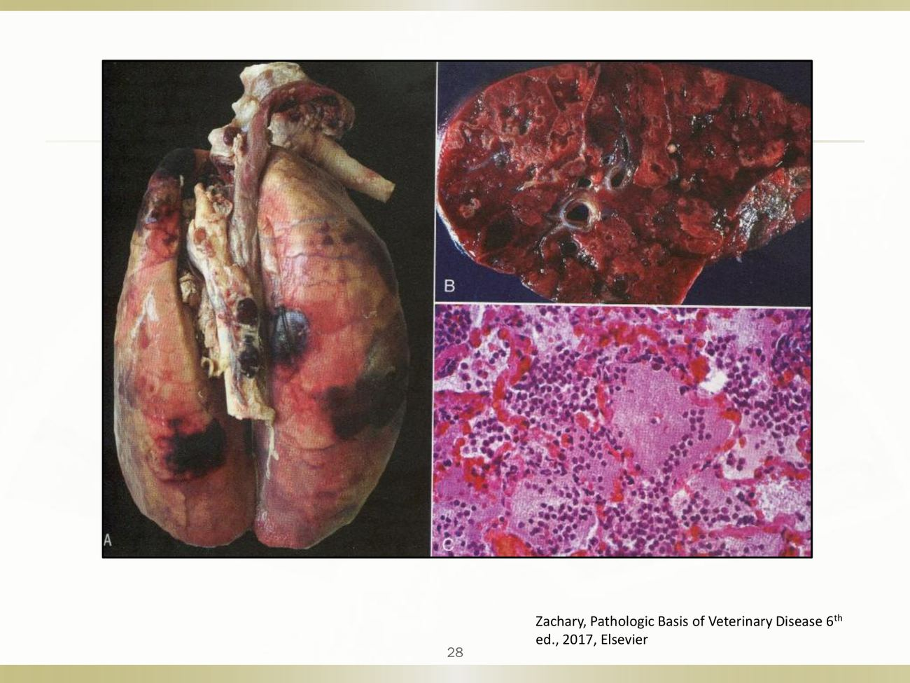
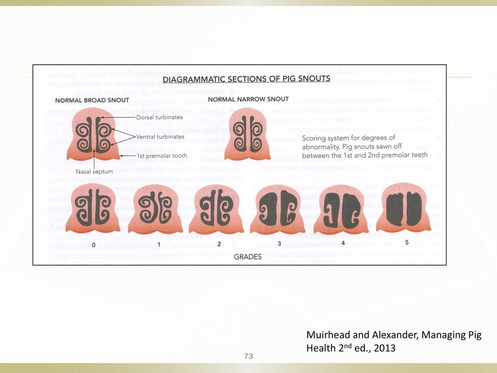
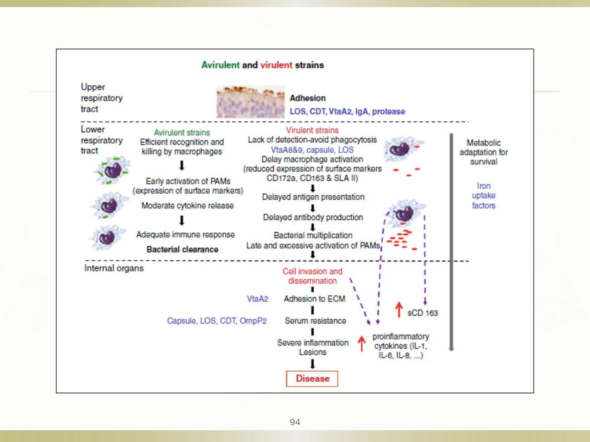
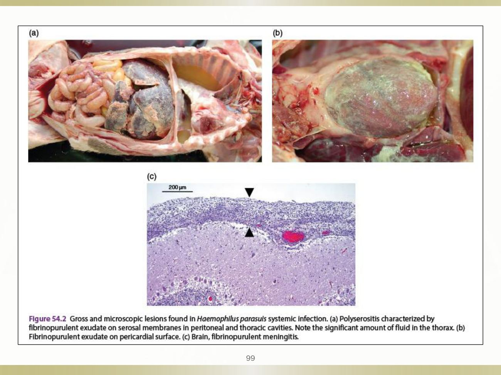

大方向與重點摘要
- 這章在講什麼
- 四個豬的重要細菌病：兩個呼吸道（胸膜肺炎放線桿菌、萎縮性鼻炎）、一個全身漿膜（Glässer 病）、一組腸道與其他（大腸桿菌感染：下痢、水腫病、乳房炎、尿道感染）。
- 為什麼重要
- APP 是全球最重要的豬細菌性呼吸道病原之一，最急性可在 24–36 小時內死亡；Glässer 病是保育舍主要的感染問題；大腸桿菌下痢是哺乳仔豬最常見、最重要的疾病。這四個病在講義後面都附了大量歷屆國考題（共 52 題），出題密度很高。
- 這章要抓的重點
-
- APP 的培養與分型：革蘭氏陰性、Biotype I 需要 NAD（V 因子），用 chocolate agar；CAMP 陽性；台灣近年以血清型 15 為主；不感染人。
- Apx 毒素：ApxI 強溶血強細胞毒、ApxII 弱溶血中等細胞毒、ApxIII 不溶血但強細胞毒、ApxIV 全部血清型都有。屬 RTX 毒素，機制像 E. coli 的 HlyA。
- APP 臨床與病變：肥育豬突然死亡、口鼻泡沫樣血液；剖檢為雙側、界線清楚的纖維素出血壞死性胸膜肺炎，肺與胸壁沾黏。
- 萎縮性鼻炎兩型：NPAR＝Bordetella bronchiseptica（輕、可逆）；PAR＝產毒型 Pasteurella multocida（PMT 毒素，重、永久）。
- Glässer 病：Glaesserella parasuis（舊名 Haemophilus parasuis），需要 V 因子不需要 X 因子；4–8 週齡保育豬；纖維素性多發性漿膜炎、關節炎、腦膜炎。
- 新生仔豬下痢：0–4 日齡、ETEC；線毛（F4/K88、F5/K99、F6/987P、F41）黏附＋腸毒素（LT→cAMP、STa→cGMP）→ 分泌性下痢；腸道不發炎、絨毛不萎縮。
- 水腫病：離乳後快速生長的保育豬、溶血性 E. coli、F18 線毛＋Stx2e；眼瞼與額頭水腫、胃黏膜下層與結腸繫膜水腫；通常不發燒、預後差。
- 尿道感染：type 1 線毛與 P 線毛。
- 容易混淆
-
- 多發性漿膜炎是 Glässer 病，不是 APP：APP 是肺＋胸膜（纖維素性胸膜炎、心包炎），Glässer 是胸腔、心包、腹腔、關節、腦膜全部都有纖維素。
- NAD（V 因子）：APP Biotype I 與 G. parasuis 都需要；G. parasuis 和 H. influenzae 相似，但不需要 X 因子（hemin）。考題常拿「X 因子」當陷阱。
- ApxIII 沒有溶血性：「ApxIII 具有較強溶血性」是錯的。
- ETEC 與 EPEC（AEEC）：ETEC 黏附但不破壞絨毛、靠毒素造成分泌性下痢；EPEC 造成 attaching and effacing（A/E）病灶、會抹除微絨毛。
四個病的主線必考
| 疾病 | 病原 | 好發年齡 | 一句話特徵 | 代表圖 |
|---|---|---|---|---|
| 胸膜肺炎放線桿菌症（Porcine pleuropneumonia, APP） | Actinobacillus pleuropneumoniae | 生長肥育豬 | 突然死亡、口鼻泡沫血、雙側纖維素出血壞死性胸膜肺炎 |  口鼻泡沫樣鮮血（p.23） |
| 萎縮性鼻炎（Atrophic rhinitis, AR） | B. bronchiseptica（NPAR）、產毒型 P. multocida（PAR） | NPAR 3–4 週齡；PAR 4–12 週齡 | 打噴嚏、聳鼻、流鼻血、鼻吻部歪曲、鼻甲骨萎縮 |  兩側鼻甲骨萎縮成空腔（p.72） |
| 格拉氏病（Glässer's disease） | Glaesserella parasuis | 4–8 週齡 | 纖維素性多發性漿膜炎＋關節炎＋腦膜炎 |  胸腹腔臟器被纖維素沾黏（p.100） |
| 大腸桿菌感染（E. coli infection） | ETEC、AEEC（EPEC）、EDEC（STEC） | 0–4 日齡；離乳後；母豬 | 新生仔豬下痢、離乳後下痢、水腫病、乳房炎、尿道感染 |  1–2 日齡下痢脫水死亡（p.124） |
內容以老師講義為主，章節順序跟講義一致。標「補充」的是講義以外的延伸，標「推測」的是個人推論，考試以老師上課內容為準。國考題答案以講義上老師用紅框標出的選項為準。圖片為老師講義截圖。
胸膜肺炎放線桿菌：病因與流行病學 Etiology & Epidemiology
胸膜肺炎放線桿菌（Actinobacillus pleuropneumoniae, APP）造成豬的胸膜肺炎（pleuropneumonia），是全球最重要的豬細菌性呼吸道病原之一，造成嚴重、快速惡化的纖維出血及壞死性胸膜肺炎（fibrinohemorrhagic and necrotizing pleuropneumonia）。
病原特性必考
- 革蘭氏陰性、不運動、有莢膜、兼性厭氧的球桿菌／短桿菌。
- 依莢膜多醣體（capsular polysaccharide）與脂多醣體（LPS）的差異，分成 19 種血清型（serotype）。
- 依生長是否需要菸鹼醯胺腺二核苷酸（nicotinamide adenine dinucleotide, NAD，又稱 V 因子）分成兩種生物型（biotype）：
| 生物型 | 需不需要 NAD | 包含的血清型 |
|---|---|---|
| Biotype I | 需要 | 17 個：1–12、15–19 |
| Biotype II | 不需要 | 8 個：2、4、7、9、11、13、14、17 |
兩個生物型加起來超過 19，是因為血清型 2、4、7、9、11、17 兩種生物型都有。考試重點是「大部分 APP 需要 NAD」，所以從肺臟分離 APP 要用添加 NAD 的血液培養基或 chocolate agar（講義 p.7、p.32）。chocolate agar 是把血液加熱裂解，讓紅血球內的 NAD 釋放出來。
2015–2022 年台灣臨床分離株以血清型 15 最多，其次是 5、1、7、2（講義 p.6）。國考 103 年考過「臺灣經常爆發第四血清型」，這是錯的選項。
公共衛生必考
APP 是宿主適應於豬的細菌，不被視為人畜共通病原（講義 p.8）。國考 105 年「下列哪一種豬隻病原不會感染人」答案就是 APP。
流行病學必考
- 全球分布，各地主要血清型不同；同一國家、甚至同一場內常同時有好幾個血清型。某些血清型在一國毒力低、在另一國卻可能造成流行。
- 只感染豬的呼吸道。最急性與急性期，細菌不只在肺，鼻分泌物中也大量存在。
- 耐過的豬可帶菌數個月，主要藏在慢性肺病灶與扁桃腺。
- 場間傳播：把帶菌豬引進未感染（naïve）族群。主要傳播途徑是短距離的鼻對鼻直接接觸；移動與混群會增加傳播風險。
- 受感染場的仔豬可在早期從帶菌母豬身上感染。
- 環境存活時間短，特別是溫暖乾燥的環境。
屠宰場慢性胸膜沾黏增加。原因可能是動物福利法規要求較晚離乳：APP 是「晚期定殖者」（late colonizer），早離乳可以大幅降低離乳豬的帶菌率，晚離乳讓仔豬有更多時間從母豬身上得到 APP（講義 p.12）。
影響發病的因素理解
菌株毒力、過度擁擠、惡劣氣候、氣溫劇烈變化、相對濕度高、通風不足；同時有假性狂犬病（Pseudorabies, PR）或豬生殖與呼吸綜合症（Porcine reproductive and respiratory syndrome, PRRS）會讓病情更嚴重（講義 p.14）。
APP 的爆發幾乎都跟引進帶菌豬或環境、管理壓力有關。豬場出現 APP 時，除了用藥，要同時問：最近有沒有引種或混群？通風、溫差、密度怎麼樣？場內有沒有 PRRS 或 PR？
胸膜肺炎放線桿菌：致病機制 Pathogenesis
APP 致病機制是考古題的問答題常客（期中考古至少三次）。答題骨架就是講義的四個階段，再補上 Apx 毒素的分型。
四個基本階段必考
| 階段 | 講義寫的因子 | 意思 |
|---|---|---|
| 1. 定殖 Colonization | 線毛（fimbriae）、LPS | 黏附在下呼吸道，特別是肺泡上皮與細支氣管末端 |
| 2. 營養攝取 Nutrient uptake | 鐵（iron）、鎳（nickel） | 跟宿主搶鐵來生長；鎳是尿素酶（urease）需要的金屬，所以 APP urease 陽性 |
| 3. 逃避宿主清除 Avoidance of host clearance | 莢膜／LPS、抵抗吞噬殺菌、抗氧化壓力防禦 | 巨噬細胞吞不掉、殺不死 |
| 4. 破壞宿主組織 Damage to host tissues | Apx 毒素、LPS | 溶血、細胞毒殺、發炎與內毒素性休克 |
補充：考古題的參考答案在第 2 點寫了「transferrin binding protein（TbpA、TbpB）」、第 3 點寫了「SodC、DnaK、stress protein」，這些是 APP 搶鐵與抗氧化的具體分子，講義只寫到「iron」「oxidative-stress defense」。
Apx 毒素：主要毒力因子必考
| 毒素 | 溶血性 hemolytic | 細胞毒性 cytotoxic | 哪些血清型產生 |
|---|---|---|---|
| ApxI | 強 | 強 | 1、5、9、10、11、14 |
| ApxII | 弱 | 中等 | 除了 10、14 以外全部 |
| ApxIII | 無 | 強 | 2、3、4、6、8、15 |
| ApxIV | 弱 | 未確定（ND） | 全部 |
（補充）I 最強、II 弱、III 不溶血、IV 大家都有。目前已知共 4 種（不是 3 種）。Apx 屬於 RTX 毒素（repeats in the structural toxin），作用機制最接近 E. coli 的 HlyA 溶血素（103 年國考）。
「CAMP 陽性」也跟 Apx 的溶血作用有關：APP 與金黃色葡萄球菌的 β 毒素一起作用，溶血圈會變大（補充）。講義把 CAMP 列為微生物學診斷方法之一（p.32）。
讀書補充Note - 這張表要背多少？
這是什麼
Apx 毒素是胸膜肺炎放線桿菌（APP）最主要的毒力因子，是細菌分泌的蛋白質毒素，專門破壞宿主細胞，造成肺部出血、壞死。
- 溶血性（hemolytic）：能不能把紅血球打破。
- 細胞毒性（cytotoxic）：能不能殺死細胞，主要是肺泡巨噬細胞和嗜中性球。
- 血清型欄：哪些血清型的 APP 會產生這個毒素。
APP 有很多血清型，每個血清型帶的毒素組合不同。這張表就是在說：不同血清型的毒力強弱不一樣。
要不要背
不用全背，分三層：
- 一定要會（國考出過）
- ApxIII 不溶血，但細胞毒性強。105 年國考的陷阱選項就是「ApxIII 具有較強溶血性」，是錯的。
- 共有 4 種（不是 3 種）。
- Apx 屬於 RTX 毒素，作用機制接近 E. coli 的 HlyA（103 年國考）。
- 記法：I 最強、II 弱、III 不溶血、IV 大家都有。
- 懂原理就好
- 毒素如何造成肺出血壞死，屬於致病機制的第 4 階段「破壞組織」。
- 為什麼 APP 的 CAMP 試驗呈陽性：Apx 的溶血作用與葡萄球菌的 β 毒素協同，溶血圈變大。
- 不用背
- 右欄那串血清型數字（1、5、9、10、11、14…）。目前沒有國考考過，講義也沒特別強調。
（補充：「要不要背」是依考古題出題方向的判斷，實際考不考以老師上課為準。）
讀書補充Note - Apx 怎麼造成肺出血壞死？RTX 與 HlyA 是什麼意思？
先講結論
Apx 是一種「在細胞膜上打洞」的毒素。細胞被打洞後會漏水、漏離子，最後死掉；肺裡的細胞和血管被大量打洞，就出血、壞死。（講義只寫到 Apx 是 RTX 毒素、造成溶血與細胞毒性；下面打洞、血管內皮與發炎的細節是補充，不是老師講的。）
1. 毒素怎麼造成肺出血壞死
- 細菌定殖在肺泡，分泌 Apx。
- Apx 黏到宿主細胞的膜上，聚在一起，在膜上形成小孔洞（補充）。
- 孔洞讓水和離子亂進亂出，細胞腫脹破裂。被打洞的有三種細胞：
- 紅血球：溶血，這就是「溶血性」。
- 肺泡巨噬細胞與嗜中性球：本來要吃細菌的防衛細胞被殺掉，這就是「細胞毒性」；細菌少了守衛，更容易繁殖。
- 血管內皮細胞（補充）：血管壁被破壞，血漏到肺泡和胸腔，造成出血。
- 死掉的細胞釋放內容物，引來更多發炎反應，再加上 LPS 的作用，肺組織壞死、胸膜表面長出纖維素，就是剖檢看到的出血壞死性胸膜肺炎。
2. 「RTX 毒素，作用機制接近 HlyA」是什麼意思
- RTX：repeats in the structural toxin，指這類毒素的蛋白質裡有一段重複的結構。它們的共同點是會在細胞膜上打洞，也需要鈣離子才有活性（補充）。記法：RTX ＝ 打洞毒素家族。
- HlyA：E. coli 的 α-溶血素（α-hemolysin），也屬於這個家族。
- 所以「Apx 的作用機制接近 HlyA」＝兩者是同一個家族，都在細胞膜打洞，造成溶血與細胞毒殺。
3. 為什麼國考會出這題（103 年）
選項裡的其他毒素作用方式完全不同：
- (A) E. coli 的 LT：活化 cAMP，造成分泌性下痢，不是打洞。
- (B) 綠膿桿菌的 exotoxin A：抑制蛋白質合成（補充）。
- (C) 破傷風毒素：阻斷抑制性神經傳導（補充）。
- (D) E. coli 的 HlyA：同為 RTX，在膜上打洞（答案）。
只要記：Apx 是打洞毒素，答案就是 HlyA。
致病流程理解
LPS → 發炎、細胞激素
Apx → 溶血、細胞毒
講義 p.17 的流程圖：LPS 引起發炎與細胞激素，同時也會導致內毒素性休克；Apx 毒素造成溶血與細胞毒性；兩條路最後都走到組織破壞與壞死。
胸膜肺炎放線桿菌：臨床症狀與病變 Clinical Signs & Lesions
臨床表現依年齡、免疫狀態、環境條件與暴露劑量而異，講義分成四型。看到「肥育豬突然死亡＋口鼻泡沫血」第一個就要想到 APP。
四種臨床型必考
| 型 | 症狀 | 結局 |
|---|---|---|
| 甚急性 Peracute | 突然發病、發燒到 41.5°C、冷漠、厭食，可能短暫下痢嘔吐；一開始躺著沒有明顯呼吸症狀；鼻、耳、腳發紺，之後擴及全身。末期嚴重呼吸困難、張口呼吸、呈坐姿，口鼻流出泡沫樣帶血液體 | 出現症狀後 24–36 小時內死亡；有些豬沒有症狀就猝死 |
| 急性 Acute | 發燒 40.5–41°C、皮膚可能潮紅；沉鬱、不願起身、不吃不喝；嚴重呼吸症狀：呼吸困難、咳嗽、張口呼吸；四肢末端鬱血 | 發病 24 小時內體況明顯下降 |
| 亞急性與慢性 | 急性症狀消失後出現；不太發燒、自發或間歇性咳嗽、食慾下降、運動耐受差；合併黴漿菌、細菌、病毒感染會加重 | 生長變差 |
| 無症狀型 Subclinical | 沒有明顯臨床症狀 | 屠宰時也沒有明顯病變 |
豬的正常體溫約 38.5–39.5°C（補充）。最急性型可高到 41.5°C，急性型 40.5–41°C，亞急性與慢性則「不太發燒」。也就是說，發燒程度跟病程急緩一起往下走，看到不發燒只咳嗽的豬，要想到慢性 APP 或其他慢性呼吸道病。
口鼻出血的鑑別：國考 96 年問「哪種病臨床上可見口鼻出血」，選項有豬流感、黴漿菌病、巴氏桿菌病、APP，答案是 APP。另外 101 年問主要臨床症狀，答案是急促腹式呼吸（不是神經症狀、下痢、嘔吐）。
剖檢病變必考
- 主要在呼吸道。
- 肺炎多半是雙側，侵犯心葉與尖葉，以及部分橫膈葉；肺炎病灶常是局部且界線清楚（local and well demarcated）。
- 氣管與支氣管充滿泡沫樣、帶血的黏液性滲出物。
- 胸腔有帶血液體。
- 纖維素性胸膜炎（fibrinous pleurisy／pleuritis）：肺與壁層胸膜沾黏。
講義 p.31「病理學診斷」再把剖檢重點整理成四點：

國考 103 年選項「單側性肺炎是主要的剖檢病灶」是錯的，講義寫的是雙側（most bilateral）。期中考古 111 年要求畫出 APP 感染的肺臟並標出肉眼病變：畫兩側肺、心葉與尖葉及部分橫膈葉的暗紅黑色界線清楚病灶、表面纖維素、與胸壁沾黏。
胸膜肺炎放線桿菌：診斷、治療與預防 Diagnosis, Treatment & Prevention
確診靠微生物學；治療的關鍵是「早」與「注射」；控制的關鍵是管理與環境。
診斷必考
| 方法 | 內容 |
|---|---|
| 病理學 | 剖檢看到上一節的四個重點 |
| 微生物學 | 取新鮮死亡的豬；添加 NAD 的血液培養基或 chocolate agar；CAMP 現象、尿素酶（urease）試驗 |
| 分子 | 聚合酶鏈鎖反應（PCR） |
| 血清學 | ELISA |
期中考古（106 學年）與國考 110 年都用同一個模式出題：「肥育豬急性死亡、口鼻出血、剖檢纖維素性胸膜炎與肺出血水腫，分離出革蘭氏陰性桿菌，CAMP 陽性」→ APP。期中考古（111 學年）則是「血液培養基分離不到，改用 chocolate agar 長出來」→ APP 需要 NAD。
治療必考
- 急性病例需要早期注射給藥（parenteral）的抗菌藥物治療。
- 藥物最好依細菌培養與藥物敏感性試驗選擇。
- 嚴重的豬可能在抗菌藥物發揮效果前就死亡。
- 整場爆發的控制，要同時改善管理與環境條件。
- 選藥時要考慮抗藥性。
補充：為什麼強調「注射」：重症豬通常不吃不喝，經飼料或飲水投藥吃不到足夠劑量，所以急性個體要用注射（IM）；講義沒有列出具體藥名與劑量。
預防必考
- 生物安全：防止帶菌豬進場。
- 減少混群與環境壓力。
- 肥育舍採統進統出（all in／all out）。
- 疫苗：死菌苗（bacterin）、毒素次單位疫苗（toxin subunit vaccine）、活菌苗。
補充：毒素次單位疫苗以 Apx 毒素為抗原；因為 ApxIV 所有血清型都有，跨血清型保護的概念就建立在 Apx 上。死菌苗則只對同血清型保護較好。
讀書補充Note - 這段疫苗是只針對 APP，還是所有有 Apx 毒素的細菌病？
先講結論
只針對 APP（胸膜肺炎放線桿菌症），不是所有帶 Apx 毒素的細菌病。
1. 為什麼只針對 APP
- 這一節標題是「胸膜肺炎放線桿菌：診斷、治療與預防」，上面的疫苗就是 APP 的疫苗。
- Apx 毒素本來就是 APP 的毒力因子。在這門課的範圍內，把 Apx 當成「APP 專屬」就好。
- 講義只列三類疫苗：死菌苗、毒素次單位疫苗、活菌苗。
2. 毒素次單位疫苗是什麼
- 只取細菌的一部分（這裡是 Apx 毒素）做成疫苗，不是整隻死菌。
- 免疫後豬產生針對 Apx 的抗體，毒素一出來就被中和，降低肺部破壞（補充）。
3. 為什麼說「跨血清型保護」（補充，講義沒寫）
- APP 有 19 種血清型，不同血清型產生的 Apx 種類不同（ApxI、II、III 各自只在某些血清型有）。
- 但 ApxIV 所有血清型都有。若疫苗含的 Apx 能涵蓋不同血清型常見的毒素，就有機會保護多種血清型。
- 死菌苗主要誘發對菌體表面（莢膜、LPS）的抗體，這些抗原各血清型不同，所以通常只對同血清型保護較好。
- 這段邏輯是我為了解釋補的，實際商品疫苗各含哪些 Apx 我不確定，不要當成考試的標準答案；要確認可問老師或查商品成分。
4. 其他細菌病用 Apx 嗎
- 本課程範圍內沒有。同屬的 Actinobacillus suis 也可能有類似的 RTX 毒素（補充，講義沒寫），但不在考試範圍。
萎縮性鼻炎：病因與流行病學 Etiology & Epidemiology
萎縮性鼻炎（Atrophic rhinitis, AR，又稱傳染性萎縮性鼻炎）已被認識近兩百年。它會降低生長速率、增加罹患肺炎的傾向；感染場在屠宰場調查中會看到鼻吻部變形。
兩種萎縮性鼻炎必考
| 非進行性萎縮性鼻炎（Nonprogressive AR, NPAR） | 進行性萎縮性鼻炎（Progressive AR, PAR） | |
|---|---|---|
| 主要病原 | 支氣管敗血性博德氏菌（Bordetella bronchiseptica） | 產毒型多殺性巴斯德桿菌（toxigenic Pasteurella multocida）或其他病原 |
| 嚴重度 | 輕微／暫時 | 嚴重／進行性 |
| 鼻甲骨傷害 | 可逆／輕微 | 永久／嚴重 |
| 對生長的影響 | 有限 | 顯著 |
國考 115 年：「何種病原分泌的毒素為豬萎縮性鼻炎最主要的致病因子？」答案是 P. multocida（PMT 毒素）。B. bronchiseptica 雖然也會造成 AR，但只造成輕微可逆的 NPAR；永久性、進行性的 PAR 靠的是 PMT。
- Bordetella 屬中，只有 B. bronchiseptica 在豬有重要性。
- B. bronchiseptica 感染很多種哺乳類，偶爾造成急性病，但更常是上呼吸道的慢性或不顯性感染。
公共衛生看過
人類感染 B. bronchiseptica 不常見，主要發生在免疫低下的人。
流行病學必考
- B. bronchiseptica 主要經飛沫（aerosol droplets）傳播，靠豬隻間直接或飛沫接觸。
- 主要傳播途徑：受感染母豬傳給出生第一週的仔豬；之後仔豬批次混群時再擴散。
- 豬場附近捕到的囓齒類、鳥類、浣熊、負鼠等動物也分離得到 B. bronchiseptica。
- 不能排除經污染物傳播：B. bronchiseptica 在土壤中可存活最多 45 天，也能在湖水中存活。
萎縮性鼻炎：致病機制 Pathogenesis
AR 的核心是「骨頭長不好」：兩種細菌的毒素都會干擾鼻甲骨的骨重塑。B. bronchiseptica 先打開門，產毒型 P. multocida 再進來造成永久傷害。
B. bronchiseptica 的毒力因子必考
致病需要一系列毒力因子依序、協調地合成；大部分毒力基因的表現需要 BvgAS 系統共同表現。
| 毒力因子 | 作用 |
|---|---|
| 絲狀血球凝集素（Filamentous haemagglutinin, FHA） | 結合纖毛 |
| Pertactin | 結合細胞 |
| 線毛（fimbriae） | 媒介黏附到細胞 |
| 腺苷酸環化酶－溶血素（Adenylate cyclase-haemolysin） | 干擾吞噬細胞功能 |
| 氣管細胞毒素（Tracheal cytotoxin, TCT） | 抑制纖毛運動、殺死纖毛細胞 |
| 皮膚壞死毒素（Dermonecrotic toxin, DNT） | 造成皮膚壞死、損害骨形成 |
| 骨毒素（osteotoxin） | 對造骨細胞有毒性 |
| 脂多醣（LPS） | 刺激細胞激素釋放 |
講義表格中 FHA、pertactin、fimbriae、tracheal cytotoxin、dermonecrotoxic toxin 以紅字標示。
國考 114 年：「下列何者不是 B. bronchiseptica 造成豬隻呼吸道感染的致病因子？」答案是表皮剝落毒素（exfoliative toxins, EFT）。EFT 是 Staphylococcus hyicus（滲出性表皮炎，下一講）的毒素，故意放進來混淆。
DNT 的角色理解
- 具有多重效應，包括損害骨形成。
- 皮膚壞死活性降低的菌株，無法造成鼻甲骨與肺的病變。
- 其他研究也指出 DNT 在小鼠與豬都是發展出肺炎與鼻甲骨萎縮的必要因子。
Pasteurella multocida 毒素（PMT）必考
- PMT 是造成豬 AR 的重要毒力因子。
- 146 kDa 蛋白質，由溶原性噬菌體（lysogenic bacteriophage）編碼，只存在產毒株的基因體中。
補充：「146 kDa、噬菌體編碼、只有產毒株才有」代表同樣叫 P. multocida，有沒有帶這個噬菌體決定了會不會造成 PAR，所以確診 PAR 要驗產毒株或毒素基因，而不是只分離到 P. multocida。
混合感染理解
- B. bronchiseptica 和其他呼吸道病原混合感染會影響嚴重度。
- B. bronchiseptica 讓 P. multocida 容易定殖上呼吸道，進而造成 PAR，這點已被確立。
- 推測機制：P. multocida 的 D 型莢膜可能和 B. bronchiseptica FHA 的肝素結合區結合，把 FHA 當成橋樑黏到呼吸道細胞上。
P. multocida 依莢膜多醣體分成 A、B、D、E、F 五型（104 年國考）；豬常見、易造成肺炎及萎縮性鼻炎的是 A、D 型（105 年國考）。講義本文只提到 D 型莢膜，這兩點來自講義附的國考題。
萎縮性鼻炎：臨床、病變、診斷與防治 Clinical Signs, Lesions & Control
看到仔豬打噴嚏、眼下有污痕、鼻子歪，就是 AR；剖檢要橫切鼻吻看鼻甲骨。
臨床症狀必考
| B. bronchiseptica（NPAR） | P. multocida（PAR） | |
|---|---|---|
| 年齡 | 鼻炎：3–4 週齡仔豬；支氣管肺炎：通常在非常小的豬（3–4 日齡） | 4–12 週齡仔豬 |
| 症狀 | 打噴嚏、鼻塞（snuffle）、聳鼻（snort），不同程度的卡他性鼻炎；漿液性或黏膿性鼻分泌物 | 打噴嚏、鼻塞；流鼻血、鼻吻變形；生長遲緩；鼻甲骨萎縮；鼻中膈偏移、明顯臉部變形 |
補充：眼窩下的污痕是鼻淚管受鼻腔病變影響、淚液外流沾上灰塵形成的淚痕。國考 111 年把它寫成「因結膜炎所導致」是錯的選項。
病變必考
- 限於鼻腔與頭骨。
- 腹側與背側鼻甲骨萎縮。
- 嚴重時篩骨鼻甲骨也可能萎縮。
- 最嚴重時所有鼻甲骨構造完全消失。

0 級：鼻甲骨捲曲完整、填滿鼻腔；隨級數增加，腹側鼻甲骨先變小，接著背側也萎縮、鼻中膈偏移；5 級時鼻甲骨幾乎完全消失、鼻腔成空腔。切面位置固定在第一與第二前臼齒之間，不同豬的分數才能互相比較（補充）。
診斷必考
- 臨床診斷。
- 剖檢。
- 培養診斷：檢測產毒型 P. multocida 或毒素相關基因，對確診 PAR 很重要。
治療與預防必考
- 母豬疫苗 → 初乳免疫（colostral immunity）。
- 改善衛生、減少傳播。
- 更新族群／生物安全。
- 只在臨床上有正當理由時才使用抗菌藥物。
- 母豬在分娩前約 6 週與 2 週各打一次疫苗，保護仔豬、減少傳播的效果不錯。
- 疫苗可能預防臨床爆發、降低 Bordetella 菌量，但幾乎不可能阻止定殖。
（補充）第一劑啟動免疫，第二劑在分娩前 2 週補強，讓母豬抗體在分娩時剛好達到高峰、濃縮進初乳；仔豬出生第一週最容易從母豬感染（上一節），初乳抗體就是要蓋住這段時間。
AR 的防治策略是「母豬疫苗＋初乳」，不是靠抗生素治療。國考 111 年「本病尚無疫苗可用，防治策略以抗生素治療為主」是錯的選項。
格拉氏病：病因、流行病學與致病機制 Etiology, Epidemiology & Pathogenesis
Glässer 在 1910 年首先從纖維素性多發性漿膜炎豬隻的滲出液分離出一種桿菌，多年後才確認是 Glaesserella parasuis。它造成豬的多發性漿膜炎、關節炎或腦膜炎，稱為格拉氏病（Glässer's disease）。
為什麼重要理解
- 爆發可能與壓力事件有關，包括混合感染、移動與混群。
- 是保育舍主要的感染問題之一，也會侵犯生長豬與母豬。
病因必考
- 副豬格拉氏菌（Glaesserella parasuis；舊名 Haemophilus parasuis），革蘭氏陰性。
- 和 H. influenzae 相似，但來源是豬。
- 生長不需要 X 因子（hemin），但需要 V 因子（NAD）。
- 可分成 15 個血清群（serovar groups）。
期中考古（111 學年）選項「此病原在體外生長需要 X factor（hemin）」是錯的。國考 109 年反過來問：「下列何者培養不需要 X 因子，但需要 V 因子？」答案是 Haemophilus parasuis。
讀書補充Note - X 因子和 V 因子是什麼？
先講結論
X 因子和 V 因子都是細菌自己合成不了、必須從環境「吃現成」的生長營養。講義只寫到 X 因子是 hemin、V 因子是 NAD；下面的細節是教科書補充。
1. 兩個因子分別是什麼
- X 因子＝hemin（血紅素）。細菌用來製造呼吸需要的酵素（如細胞色素），產生能量（補充）。
- V 因子＝NAD（菸鹼醯胺腺二核苷酸），有時也可用 NADP。是代謝反應中搬運電子的輔酶（補充）。
2. 為什麼會牽涉到培養基（補充）
- 這兩個因子都存在紅血球裡，但一般血液培養基裡的 NAD 被紅血球的酵素分解，細菌拿不到。所以需要 V 因子的細菌（APP、G. parasuis）在一般血液培養基上長不出來。
- Chocolate agar（巧克力培養基）是把血液加熱使紅血球裂解，X、V 因子都釋放出來，這些細菌就長得好。
- 衛星現象：把 V 因子依賴菌種在金黃色葡萄球菌旁邊，它會在葡萄球菌菌落周圍長出來，因為葡萄球菌會釋放 NAD。
3. 考試要記的重點
- 一定要會（國考與期中考古出過）
- G. parasuis：不需要 X 因子，但需要 V 因子。
- 期中考古（111 學年）選項「此病原生長需要 X factor（hemin）」是錯的。
- 國考 109 年反過來問：「培養不需要 X 因子但需要 V 因子」答案是 Haemophilus parasuis。
- 懂就好
- APP Biotype I 需要 NAD（V 因子），分離要用加 NAD 的培養基或 chocolate agar（97、103 年國考）。
- H. influenzae 需要 X 和 V 兩個；G. parasuis 只要 V。
4. 一句話記法
「GP 只要 V 不要 X」：G. parasuis 只要 V（NAD），不要 X（hemin）。
流行病學必考
- 很多豬的鼻腔都有 G. parasuis：它是呼吸道正常菌叢的一員，在豬群中無所不在。
- 發病可能與壓力有關：運輸、移到新欄、溫度不穩、通風不良。
- 家豬與野豬是唯一已知的宿主。
- 經帶菌豬或病豬接觸易感豬傳播。
注意：國考 114 年選項「致病原為消化道之常在菌叢」是錯的，它是呼吸道常在菌。
致病機制理解
- 黏附、形成生物膜（biofilm）。
- 抵抗吞噬。
- 侵入內皮細胞，誘發細胞凋亡與促發炎的 IL-6、IL-8。

格拉氏病：臨床症狀、病變與防治 Clinical Signs, Lesions & Control
Glässer 病的關鍵字就是「到處都是纖維素」：胸膜、心包、腹膜、滑膜、腦膜。
臨床症狀必考
- 主要在 4–8 週齡的豬。
- 最急性：病程短（48 小時），可能猝死，沒有特徵性肉眼病變。
- 急性：高燒（41.5°C）、咳嗽、腹式呼吸、跛行、關節腫脹、走路步伐短且用腳尖小步行走；中樞神經症狀如側躺、划水、顫抖。
病變必考
- 最急性：死亡但沒有特徵性肉眼病變，有些組織可能有點狀出血。
- 急性：纖維素性或纖維化膿性多發性漿膜炎（fibrinous／fibrinopurulent polyserositis）、多發性關節炎（polyarthritis）、腦膜炎（meningitis）。纖維素滲出物出現在胸膜、心包、腹膜、滑膜與腦膜，通常伴隨液體增加。
- 很多有神經症狀的豬，也常常沒有特徵性肉眼病變。

保育豬同時出現發燒、跛行與關節腫脹、神經症狀，剖檢胸腹腔都有纖維素 → 想到 Glässer 病。國考 102 年問「何者與 Glässer 病無關」，選項腹膜炎、關節炎、腦膜炎都有關，答案是肝炎。
補充：保育豬神經症狀的鑑別還要想到豬鏈球菌（Streptococcus suis），兩者都會造成腦膜炎與關節炎；S. suis 是化膿性腦膜炎，屬於之後的講義。
治療與預防必考
- 對臨床發病豬，早期抗菌藥物治療可能有效。
- 各分離株的抗藥模式不同，要考慮藥物敏感性。
- 減少離乳、運輸、混群相關的壓力。
- 控制重要的混合感染。
- 商業疫苗或自家疫苗可能有幫助，但保護力可能依菌株／血清型而定。
大腸桿菌感染：總覽與新生仔豬下痢 Neonatal E. coli Diarrhea
大腸桿菌在全世界都是造成豬多種疾病的重要原因。這一節先看分型總覽，再看哺乳仔豬最常見、也可能最重要的疾病：新生仔豬下痢。
大腸桿菌造成的五種疾病必考
| 疾病 | 年齡 | 病原型 |
|---|---|---|
| 新生仔豬下痢（neonatal E. coli diarrhea） | 新生仔豬（0–4 日齡） | ETEC |
| 離乳後下痢（postweaning E. coli diarrhea, PWD） | 離乳後 | ETEC、AEEC |
| 水腫病（edema disease, ED） | 離乳後保育豬 | EDEC（STEC） |
| 腸桿菌性乳房炎（coliform mastitis）／乳房炎－子宮炎－無乳症候群（mastitis-metritis-agalactia, MMA） | 母豬 | — |
| 尿道感染（urinary tract infection, UTI） | 母豬 | UPEC |
病原分型必考
- 屬於腸內細菌科（Enterobacteriaceae），常存於動物腸道，隨腸內容物散播到環境；絕大部分無害，少數是病原菌。
- I. 腸毒素型（enterotoxigenic E. coli, ETEC）。
- II. 附著抹除型（attaching and effacing E. coli, AEEC；類似人類的腸道致病型 enteropathogenic E. coli, EPEC）。
- III. 水腫病型（edema disease E. coli, EDEC；也有人稱為產志賀毒素型 Shiga toxin-producing E. coli, STEC）。
新生仔豬下痢：ETEC必考
- 最常見於 0–4 日齡仔豬，由 ETEC 造成。
- 黏附：線毛 F4（K88）、F5（K99）、F6（987P）、F41。
- 毒素：STa、STb、LT。
STa → guanylate cyclase → cGMP↑
ETEC 只黏附、不侵入、不破壞絨毛，傷害全部來自毒素讓腸細胞「主動往外分泌」電解質和水，所以叫分泌性下痢（hypersecretion，115 年國考）。大量碳酸氫根流失造成代謝性酸中毒。LT 的作用機制和霍亂毒素（cholera toxin）最接近（115 年國考）。因為絨毛沒被破壞，100 年國考「腸管絨毛嚴重萎縮」是錯的選項。
外觀與剖檢必考
- 外觀：嚴重脫水、眼窩下陷、消瘦、毛髮粗糙；肋骨與骨盆突出；仔豬畏冷擠成一堆；會陰部沾滿糞便。
- 剖檢：小腸擴張、腸壁變薄透明、腸腔積液；黏膜蒼白、不發炎；胃內充滿乳汁，凝乳塊常呈層狀。
期中考古（106 學年）問答題：「新生仔豬大腸桿菌下痢，請從外觀、剖檢、微生物特性三方面描述」。答題就照這三格寫：外觀＝脫水、眼窩下陷、消瘦、毛粗；剖檢＝小腸壁薄透明、積液、不發炎、胃有凝乳；微生物＝ETEC、線毛黏附＋腸毒素 LT／ST。
大腸桿菌感染：離乳後下痢與水腫病 Postweaning Diarrhea & Edema Disease
離乳後下痢與水腫病常發生在同一個年齡層。關鍵是離乳讓母乳裡的保護性抗體突然消失。
為什麼是離乳後理解
- 年紀較大、尚未離乳的仔豬，在母乳保護抗體減少時也可能發生 E. coli 下痢與水腫病。
- 離乳時失去乳汁抗體是保育豬容易發生 E. coli 腸道感染的主要原因，所以大部分病例發生在離乳後。
致病包含三件事：黏附 → 下痢 → 腸毒血症（Stx2e）。Stx2e 有很多別名：志賀樣毒素（Shiga-like toxin）、verotoxin、水腫病因子（edema disease principle）、神經毒素（neurotoxin）、血管毒素（vasotoxin）。
離乳後大腸桿菌下痢（PWD）必考
- 最常由 ETEC 造成，也可由 AEEC（EPEC）造成。
- PWD 菌株通常帶 F4（K88）或 F18 線毛。
- AEEC 緊密附著在腸上皮細胞上，抹除微絨毛，有時還會侵入上皮細胞（attaching and effacing 病灶，114 年國考）。
讀書補充Note - F4、F5、F6、F18、F41、987P、P、type 1 這些線毛怎麼背？
先講結論
這些都是大腸桿菌線毛的編號，不用逐個背字面意思，用「黏在哪裡、引起什麼病」分組記就好。講義列了每個線毛對應的病；下面關於名稱由來的說明是補充。
1. 這些編號是什麼意思
- F4、F5、F6、F18、F41：F＝fimbriae（線毛），後面的數字只是流水編號，沒有數學意義。
- K88、K99、987P：這些線毛的舊名稱，同一個線毛有兩個名字：F4＝K88、F5＝K99、F6＝987P。舊名稱的由來是補充，考試只要會對照。
- type 1、P、curli：另一套命名；P＝Pyelonephritis（腎盂腎炎），見「type 1 線毛和 P 線毛是什麼」。
2. 依「黏在哪、造成什麼病」分組（講義）
- 新生仔豬下痢（ETEC）：F4（K88）、F5（K99）、F6（987P）、F41，黏小腸。
- 離乳後下痢（PWD）：F4（K88）或 F18，黏小腸。
- 水腫病（STEC）：F18，黏空腸、迴腸。
- 尿道感染（UPEC）：type 1 ＋ P（type 1 黏膀胱、P 黏腎臟，後者為補充）。
3. 106 學年期中 Q28 怎麼解
- 題目：造成豬尿道感染的 E. coli，最常有 type 1，再加哪一種？
- (A) 987P：新生仔豬下痢的，不是尿道。 (B) P：尿道感染的，答案。 (C) curli：細菌表面的纖維，常和黏附、生物膜有關（補充），不是本章重點。 (D) F41：新生仔豬下痢的，不是尿道。
- 解法：先看病在哪裡（尿道），再從上面的分組找出尿道用 type 1 和 P。
4. 要怎麼背
- 一定要會（國考與期中考古出過）
- 尿道感染 ＝ type 1 ＋ P。
- 新生仔豬下痢 ＝ F4、F5、F6、F41。
- 離乳後下痢 ＝ F4 或 F18。
- 水腫病 ＝ F18。
- 懂就好
- F4＝K88、F5＝K99、F6＝987P：題目常用舊名稱，能對照即可。
- 不用背
- curli，以及舊名稱的由來。
5. 記憶小技巧（補充）
- 「新生仔豬四大」：F4、F5、F6、F41，數字連續好記，F18 不在其中。
- F18 只和離乳後有關：水腫病和離乳後下痢才出現。
- F4 兩邊都有：新生仔豬和離乳後都會出現，最常見。
- 泌尿＝type 1 ＋ P，不要和 F 系列混在一起：F 系列都是腸道的。
期中考古（106 學年）選項「離乳後下痢的下痢便通常帶血及黏液」是錯的。104 年國考「大腸桿菌造成肥育豬血痢」也是錯的：大腸桿菌症不造成血痢。
PWD 的預防與控制理解
離乳管理、衛生與環境控制、飼糧、疫苗／免疫預防、遺傳抗性、必要時才做目標性抗菌治療、輸液與電解質支持。
水腫病（腸水腫）必考
- 又稱 gut edema、bowel edema。
- 由溶血性 E. coli 造成，帶 F18 線毛並產生 Shiga toxin 2e（Stx2e）。
- 是最急性的毒血症，主要侵犯健康、快速生長的保育豬。
- 腸道內產生的 Stx2e 造成主要的臨床症狀與病變。
受體濃度高的部位：胃黏膜下層、結腸繫膜、額頭與眼瞼的皮下組織、喉頭、腦。所以水腫病最明顯的特徵是胃黏膜下層與結腸繫膜（mesocolon）水腫。
水腫病的控制必考
- 預防比治療重要，因為病程可能很快。
- 減少離乳壓力與突然的飼料變換。
- 適當時可用針對 Stx2e／F18 的疫苗。
- 抗菌藥物應依臨床與藥敏資訊做目標性使用。
- 年齡：離乳後到保育期，不是一週齡以下、不是離乳前（99、103、106 年；期中考古）。
- 病原：溶血性 E. coli（STEC），在 blood agar 上有溶血；不是 C. perfringens、不是 Brucella suis、不是 H. parasuis。
- 致病因子：線毛以外最主要是毒素（112 年）；Stx2e 不是讓 cAMP 上升的毒素（那是 LT）。
- 不發燒：「罹病後有急性發熱現象」是錯的（99 年）。
- 預後差、死亡率高（106 年）。
大腸桿菌感染：乳房炎與尿道感染 Mastitis & UTI
這兩個都是母豬的大腸桿菌病，考點集中在「早期怎麼發現」與「哪兩種線毛」。
乳房炎理解
- 母豬的腸道菌叢、新生仔豬的口腔菌叢與環境細菌都會污染乳頭。
- 母豬的墊料很重要：糞尿可能污染乳房。
- 臨床症狀：發燒、無精打采、虛弱、對仔豬失去興趣。
- 仔豬行為對早期發現泌乳失敗非常有幫助：營養不良的仔豬看起來消瘦，常常試圖吸奶、在乳頭間移來移去、啃墊料、舔地上的尿。
- 病變侷限在乳腺與局部淋巴結。
母豬乳房炎最早的警訊常常不是母豬，而是仔豬：一窩仔豬突然變瘦、到處找奶，就要檢查母豬乳房與體溫。
尿道感染（UTI）必考
- 非傳染性、內源性感染。
- 糞便菌叢污染並沿尿道上行，母豬比公豬容易。
- 密集飼養時母豬的外陰常直接接觸糞便；犬坐姿勢（dog-sitting position）會把糞便推進陰道。
- 產生 type 1 線毛與 P 線毛的 E. coli 容易造成 UTI。
國考 104 年與期中考古（106 學年）都考過：UTI 的 E. coli 除了 P 線毛，最常帶 type 1 線毛；期中考古（111 學年）則問造成腎盂腎炎的線毛，答案是 P 線毛。
讀書補充Note - type 1 線毛和 P 線毛是什麼？
先講結論
線毛（fimbriae，也叫 pili）是細菌表面細細的「毛」，用來黏在宿主細胞上；黏不住就會被尿液沖走，所以線毛是尿道感染的第一步。type 1 和 P 是兩種不同的線毛，黏在不同的地方。講義只寫到這兩種線毛與考題答案，下面的受體和位置細節是教科書補充。
1. 這兩種線毛是什麼
- type 1 線毛：黏在膀胱（補充），受體是甘露糖類（補充），造成膀胱炎。
- P 線毛：黏在腎臟（補充），受體是腎臟細胞上的醣脂 globoside（補充），造成腎盂腎炎。P＝Pyelonephritis（腎盂腎炎）。
2. 為什麼會牽涉到上行感染
- 母豬的尿道感染，是糞便中的 E. coli 污染外陰，沿尿道往上爬（講義）。
- 先靠 type 1 線毛黏在膀胱黏膜，造成膀胱炎（補充）。
- 若繼續往上到輸尿管與腎臟，P 線毛才黏住腎臟細胞，造成腎盂腎炎（補充）。講義寫帶這兩種線毛的 E. coli 容易造成 UTI；上行階段的先後順序是補充。
3. 考試要記的重點
- 一定要會（國考與期中考古出過）
- 104 年國考與 106 學年期中考古：UTI 的 E. coli 除了 P 線毛，最常帶 type 1 線毛。
- 111 學年期中考古：造成腎盂腎炎的線毛是 P 線毛。
- 懂就好
- 這兩種線毛和腸道的線毛不同：新生仔豬下痢的 ETEC 帶的是 F4（K88）、F5（K99）、F6（987P）、F41，是黏腸道的。
- 看到「線毛」題，先看病在哪：腸道是 F4／F5 一類；尿道才是 type 1／P。
- 不用背
- 受體的化學名稱（甘露糖、globoside）與基因名稱。
4. 一句話記法
「P 腎、1 膀」：P 線毛 → 腎盂腎炎；type 1 → 膀胱。
鑑別比較 Differential Comparison
把本講義四個病放在一起比。這些表格都是根據講義內容整理。
呼吸道與漿膜三病必考
| APP | 萎縮性鼻炎 | Glässer 病 | |
|---|---|---|---|
| 病原 | A. pleuropneumoniae | B. bronchiseptica／產毒型 P. multocida | G. parasuis |
| 年齡 | 生長肥育豬 | 3–12 週齡 | 4–8 週齡（保育） |
| 部位 | 下呼吸道（肺、胸膜） | 鼻腔與頭骨 | 全身漿膜、關節、腦膜 |
| 招牌症狀 | 口鼻泡沫血、張口呼吸、猝死 | 打噴嚏、聳鼻、流鼻血、鼻歪 | 發燒、跛行、關節腫、神經症狀 |
| 招牌病變 | 雙側、界線清楚的纖維素出血壞死性胸膜肺炎 | 鼻甲骨萎縮、鼻中膈偏移 | 纖維素性多發性漿膜炎 |
| 主要毒力因子 | Apx 毒素、LPS、莢膜 | DNT（Bb）、PMT（Pm） | 黏附、生物膜、抗吞噬、侵入內皮 |
| 人畜共通 | 否 | Bb 偶見於免疫低下者 | 否（宿主只有家豬、野豬） |
培養需求必考
| 病原 | V 因子（NAD） | X 因子（hemin） | 培養基 |
|---|---|---|---|
| A. pleuropneumoniae | Biotype I 需要；Biotype II 不需要 | 講義未提 | 加 NAD 血液培養基、chocolate agar |
| G. parasuis | 需要 | 不需要 | chocolate agar |
大腸桿菌各型必考
| 新生仔豬下痢 | 離乳後下痢 | 水腫病 | 尿道感染 | |
|---|---|---|---|---|
| 年齡 | 0–4 日齡 | 離乳後 | 離乳後、快速生長的保育豬 | 母豬 |
| 病原型 | ETEC | ETEC（多）、AEEC | EDEC（STEC），溶血性 | UPEC |
| 線毛 | F4（K88）、F5（K99）、F6（987P）、F41 | F4（K88）或 F18 | F18 | type 1、P |
| 毒素／機制 | LT（cAMP）、STa（cGMP）、STb → 分泌性下痢 | ETEC 同左；AEEC 附著抹除 | Stx2e → 血管內皮傷害 | 上行感染 |
| 腸道病變 | 壁薄透明、積液、不發炎、胃有凝乳 | 小腸鬱血、可發炎 | 胃黏膜下層與結腸繫膜水腫 | 腎盂腎炎、膀胱炎 |
補充：期中考古（111 學年）問答題要比較 E. coli 新生仔豬下痢、沙門氏菌下痢與 C. perfringens type C 下痢。沙門氏菌在下一講〈細菌性疾病 (II)〉；C. perfringens 不在這兩講中。
講義所附歷屆國考題 National Exam Questions
講義每個疾病後面附了歷屆國考題，答案是講義上老師用紅框標出的選項。每題都列出完整選項，先自己作答，再點「顯示答案」看詳解；詳解會逐一說明每個選項為什麼對或錯，並附講義頁碼。標「補充」的是講義沒寫、為了解釋選項而延伸的內容。
胸膜肺炎放線桿菌（13 題）必考
(B) 錯，所以選它：講義 p.16 的表格中 ApxIII 的溶血性是 None，它只有強細胞毒性。
(A) 對：表格列出 I–IV 四種。
(C) 對：ApxII 溶血性 weak、細胞毒性 moderate。
(D) 對：ApxI strong、ApxII moderate、ApxIII strong；ApxIV 的細胞毒性是 ND（未確定）。
(C) 對：APP 宿主適應於豬，不被視為人畜共通病原（p.8）。
(A) 錯：S. Choleraesuis 在亞洲部分地區是人類侵襲性沙門氏菌症的重要原因（細菌性疾病 II）。
(B) 錯：B. suis 是人類布氏桿菌症的主要來源之一（細菌性疾病 II）。
(D) 錯：豬丹毒菌造成人類類丹毒（erysipeloid，fish handler's disease）（細菌性疾病 II）。
(C) 對：圖中豬口鼻出血、肺臟暗紅出血病灶，肥育豬猝死，是 APP 最急性型。
(A) 錯：豬瘟是全身出血性病毒病，主要病變在脾梗塞、淋巴結出血、迴盲瓣鈕扣狀潰瘍（第 2 週）。
(B) 錯：萎縮性鼻炎病變限於鼻腔與頭骨，不會猝死。
(D) 錯：黴漿菌肺炎是慢性、低死亡率。
(D) 對：Apx 與 E. coli 溶血素 HlyA 同屬 RTX 毒素家族，都是在細胞膜上形成孔洞造成溶血與細胞毒殺（補充：講義只寫 Apx 是 RTX 毒素，機制分類為延伸）。
(A) 錯：LT 是活化 adenylate cyclase、升高 cAMP 的腸毒素（p.117）。
(B) 錯：exotoxin A 抑制蛋白質合成（ADP-ribosylation of EF-2，補充）。
(C) 錯：破傷風毒素阻斷抑制性神經傳導物質釋放（補充）。
(B) 對：生長肥育豬最常見。
(A) 錯：大腸鈕扣狀潰瘍是沙門氏菌症與豬瘟的病變。
(C) 錯：哺乳豬下痢主因是 E. coli（ETEC）。
(D) 錯：氣腫疽（blackleg）由 Clostridium chauvoei 引起，主要在反芻獸（補充）。
(C) 對：NAD＝V 因子（p.6）。
(A)(B)(D) 錯：離胺酸、神經胺酸酶、紅黴素都不是 APP 的生長需求。neuraminidase 是豬丹毒菌的毒力因子（細菌性疾病 II）。
(D) 對：APP 的招牌症狀就是口鼻泡沫樣出血。
(A) 錯：豬流感是高發病率、低死亡率的急性呼吸道病，咳嗽、流鼻水（第 5 週）。
(B) 錯：黴漿菌病是慢性乾咳。
(C) 錯：巴氏桿菌在本講義是萎縮性鼻炎；鼻出血可見於 PAR，但「口鼻出血」的經典答案是 APP。
萎縮性鼻炎（10 題）必考
(C) 對：B. bronchiseptica 讓 P. multocida 容易定殖上呼吸道，進而造成 PAR；推測 Pm 的 D 型莢膜以 Bb 的 FHA 為橋樑黏附（p.64）。
(A)(B)(D) 錯：與萎縮性鼻炎無關。
(B) 對：豬的 P. multocida 以莢膜型 A、D 為主；講義本文提到 D 型莢膜與 Bb 的 FHA 結合（p.64）。
（補充）B、E 型主要造成牛的出血性敗血症，F 型多見於禽類。
(B) 對：產毒型 Pm 造成 PAR。
(A) 錯：多發性漿膜炎是 Glässer 病（G. parasuis）。
(C)(D) 錯：都是 E. coli。
Glässer 病（10 題）必考
(B) 對。
(A) 錯：Glässer 不造成腸炎。
(C) 錯：肝臟粟粒狀壞死白點（副傷寒小節）是敗血型沙門氏菌症。
(D) 錯：滲出性表皮炎是 S. hyicus。
(A) 對。
(B) 錯：萎縮性鼻炎。
(C) 錯：假性狂犬病（第 4 週）。
(D) 錯：豬痘（第 4 週）。
(B) 對。
(A) 錯：greasy pig disease＝滲出性表皮炎。
(C) 錯：Johne 病＝反芻獸副結核病。
(D) 錯：heartwater 是反芻獸的 Ehrlichia ruminantium 感染（補充）。
(D) 對。
(A) 錯：E. coli。
(B) 錯：APP。
(C) 錯：梭菌（之後的講義）。
大腸桿菌感染（19 題）必考
(A) 對（老師紅框）。講義本文沒有談敗血症；（補充）新生仔豬未吃到足夠初乳時，E. coli 可直接侵入血流造成敗血症，所以落在出生後幾天內。
(B)(C)(D) 錯：這些年齡已有初乳抗體或主動免疫，原發性敗血症少見。
(B) 對：LT 活化 adenylate cyclase、升高 cAMP（p.117）；（補充）霍亂毒素作用方式相同，兩者結構也相近。
(A) 錯：Shiga toxin（Stx2e）抑制蛋白質合成、傷害血管內皮（水腫病）。
(C) 錯：李斯特菌溶血素，為孔洞形成毒素（補充）。
(D) 錯：豬鏈球菌溶血素（補充）。
(C) 對：ETEC 的腸毒素讓腸細胞分泌電解質與水，不破壞黏膜（p.117–118）。
(A) 錯：豬赤痢，大腸黏膜壞死、黏液血便（補充）。
(B) 錯：增殖性腸病（補充）。
(D) 錯：壞死性出血性腸炎（補充）。
(D) 對（補充：講義本文未列）。O＝菌體（LPS）、H＝鞭毛、K＝莢膜、F＝線毛（例如 F4 即 K88）。
(D) 對：EDEC 也稱 STEC（p.116）。
(B) 錯：ETEC 造成新生仔豬下痢與離乳後下痢。
(C) 錯：EPEC（AEEC）造成離乳後下痢的 A/E 病灶。
(A) 錯：與豬水腫病無關。
(D) 對：K88＝F4、K99＝F5、987P＝F6，都是線毛（p.117）。
(A) 錯：名稱裡的「K」原本是莢膜抗原的命名方式，所以容易誤選；後來確認它們其實是線毛，才改名為 F4、F5（補充）。
(B)(C) 錯。
(A) 對。
(B) 錯：病原是 E. coli。
(C) 錯：胃黏膜下層與結腸繫膜水腫最明顯。
(D) 講義沒有寫台灣盛行情形；老師框的是 (A)。
(B) 錯，所以選它：ETEC 不破壞絨毛；絨毛萎縮是病毒性下痢（TGE、PED、輪狀病毒）的特徵。
(A) 對：新生仔豬下痢＋離乳後下痢。
(C) 對（補充）。
(D) 對：胃有凝乳、小腸壁薄透明（p.126–127）。
期中考古題 Past Midterm Questions
你提供的期中考古中，屬於本講義範圍的題目。答案來源：106 學年為老師紅字、111 學年為考卷上的批改記號、合卷為考卷旁手寫答案。題號依原考卷；有附圖的題目註明對應的講義圖頁。
考古題照片為手機翻拍，題目文字依可辨識內容整理。「合卷」是考古融合中鄭益謙（Part A）與葉光勝（Part B）的合卷，年份不明。
問答題必考
講義 p.15 的四個階段：
- 定殖（colonization）：以線毛、LPS 黏附下呼吸道（肺泡與細支氣管末端上皮）。
- 營養攝取（nutrient uptake）：取得鐵、鎳。（補充：以 transferrin binding protein TbpA/TbpB 與宿主搶鐵；鎳是 urease 所需。）
- 逃避宿主清除：莢膜與 LPS 抵抗吞噬殺菌，並有抗氧化壓力防禦。（補充：SodC、DnaK。）
- 破壞宿主組織：Apx 毒素（ApxI 強溶血強細胞毒、ApxII 弱溶血中等細胞毒、ApxIII 不溶血強細胞毒、ApxIV 全部血清型都有）造成溶血與細胞毒殺；LPS 引起發炎、細胞激素與內毒素性休克。最終組織壞死，形成纖維素出血壞死性胸膜肺炎。
可加一句誘因：壓力（擁擠、通風差、溫差、混群）與 PR、PRRS 混合感染會加重病情（p.14）。
外觀：0–4 日齡仔豬黃色水樣下痢、嚴重脫水、眼窩下陷、消瘦、毛粗、肋骨與骨盆突出，畏冷擠成一堆，會陰沾滿糞便（p.122–125）。
剖檢：小腸擴張、壁薄透明、腸腔積液；黏膜蒼白不發炎、絨毛不萎縮；胃內充滿乳汁，凝乳塊常呈層狀（p.123、p.126–127）。
微生物特性與致病機制：ETEC，革蘭氏陰性桿菌、腸內細菌科。以線毛 F4（K88）、F5（K99）、F6（987P）、F41 黏附小腸上皮（不侵入、不破壞微絨毛），分泌腸毒素：LT 活化 adenylate cyclase → cAMP↑；STa 活化 guanylate cyclase → cGMP↑（另有 STb）→ 碳酸氫根、鈉、氯與水分泌到腸腔 → 分泌性下痢 → 脫水、代謝性酸中毒 → 死亡（p.117–118）。
E. coli（本講義）：0–4 日齡；ETEC 線毛＋腸毒素；黃色水樣、不帶血；腸道不發炎、絨毛不萎縮、胃有凝乳；脫水與酸中毒。
沙門氏菌：見下一講〈細菌性疾病 (II)〉。重點是離乳後保育豬、S. Typhimurium 造成黃色水樣下痢、壞死性結腸炎與盲腸炎、結腸鈕扣狀潰瘍。
C. perfringens type C：不在這兩講的範圍。（補充，供參考）1 週齡內仔豬出血性下痢，小腸（空腸）出血壞死、黏膜下氣腫，β 毒素造成。
106 學年期中考（葉光勝老師部分）必考
(B) 對：與 110 年國考同一模式。
(A) 錯：敗血型沙門氏菌症是耳翼發紺、脾腫、肝壞死點。
(C) 錯：萎縮性鼻炎。
(D) 錯：腸道與泌尿道病原。
(A) 對。
(B)(D) 錯：萎縮性鼻炎。
(C) 錯：腸炎型沙門氏菌症。
(B) 錯，所以選它（老師紅字）：已知 4 種（ApxI–IV）。
(A) 對。
(C) 當年（2017）的說法；現在講義寫 19 種血清型，今年考試要寫 19。
(D) 對。
111 學年期中考（2022，葉光勝老師部分）必考
(C) 對。
(B) 錯：Glässer 病。
(A)(D) 錯。
病是水腫病。
(B) 對：Stx2e 屬志賀毒素家族；（補充）志賀毒素會切斷核糖體 RNA、抑制蛋白質合成，使血管內皮細胞死亡。講義只寫「傷害血管內皮」。
(A) 錯：病程快，預防比治療重要。
(C) 錯：布氏桿菌症造成流產與睪丸炎。
(D) 錯：malignant edema（惡性水腫）是 Clostridium septicum 等梭菌的傷口感染（補充）。
合卷（Part B 葉光勝老師部分）必考
(D) 對：與 106 學年 Q2、110 年國考同一題型。
(A)(B)(C) 錯。
(C) 對。
(A) 錯：Glässer 病、豬鏈球菌。
(B) 錯：E. rhusiopathiae。
(D) 錯。
(D) 對。
(C) 補充：M. hyorhinis 也會造成多發性漿膜炎與關節炎，但「Glässer's disease」專指 H. parasuis。
(A)(B) 錯。
(A) 錯，所以選它：離乳後。
(B) 對：溶血性 E. coli。
(C) 對。
(D) 對：Stx2e。
考試方向（推測）
以下是依講義強調的內容與考古題推測的出題方向，考試範圍以老師上課為準。有考古題根據的列在上兩節。
| 可能考法 | 答題重點 |
|---|---|
| APP 致病機制（問答） | 定殖、營養攝取（鐵、鎳）、逃避清除（莢膜、LPS）、破壞組織（Apx、LPS） |
| Apx 毒素四型 | I 強溶強毒；II 弱溶中毒；III 不溶血強毒；IV 全部血清型都有 |
| APP 看圖辨病 | 口鼻泡沫血、張口呼吸犬坐、雙側界線清楚出血性肺炎＋胸膜沾黏 |
| APP 培養與鑑定 | NAD（V 因子）、chocolate agar、CAMP、urease；台灣以血清型 15 為主 |
| NPAR vs PAR | Bb、輕、可逆 vs 產毒型 Pm、重、永久；PMT 146 kDa、噬菌體編碼 |
| AR 防治 | 母豬分娩前 6 週與 2 週疫苗、初乳；疫苗擋不住定殖；抗生素只在必要時 |
| Glässer 病 | 4–8 週齡、V 需要 X 不需要、多發性漿膜炎＋關節炎＋腦膜炎、呼吸道常在菌、壓力誘發 |
| ETEC 機轉（問答） | F4/F5/F6/F41 黏附 → LT→cAMP、STa→cGMP → 分泌性下痢 → 脫水酸中毒 |
| 大腸桿菌三型 | ETEC、AEEC（EPEC，A/E 病灶）、EDEC（STEC，Stx2e） |
| 水腫病 | F18＋Stx2e、溶血性、離乳後、受體 globotetraosyl ceramide、胃黏膜下層與結腸繫膜水腫、不發燒、預後差 |
| 母豬 UTI 與乳房炎 | type 1＋P 線毛、犬坐姿勢；仔豬行為是乳房炎早期線索 |
學習重點整理
練習題 Practice Quiz
先自己作答再點開答案。Q12–Q14 是臨床情境題。
ApxIII 沒有溶血性但細胞毒性強（血清型 2、3、4、6、8、15）。ApxI 是強溶血強細胞毒；ApxII 是弱溶血中等細胞毒；ApxIV 所有血清型都有、溶血性弱。
需要 NAD（V 因子）所以要 chocolate agar，加上 CAMP 陽性，是 APP 的鑑定線索。P. multocida 與 B. bronchiseptica 不需要 NAD；沙門氏菌在 MacConkey 上長無色菌落。
講義寫「most bilateral」，侵犯心葉、尖葉與部分橫膈葉，病灶局部且界線清楚，並有纖維素性胸膜炎。C 是 Glässer 病，D 是萎縮性鼻炎。
PMT 由噬菌體編碼、只在產毒株，所以確診 PAR 要驗產毒株或毒素基因。NPAR 是 Bb、可逆；疫苗幾乎不可能阻止定殖；病變限於鼻腔與頭骨。
Tracheal cytotoxin（TCT）抑制纖毛、殺纖毛細胞。FHA 結合纖毛；pertactin 結合細胞；adenylate cyclase-haemolysin 干擾吞噬細胞。
G. parasuis 不需要 X 因子，只需要 V 因子（NAD）。這是國考與期中考古都出過的陷阱。
STa → guanylate cyclase → cGMP↑；LT 才是 adenylate cyclase → cAMP↑（像霍亂毒素）。C 是 Stx2e（水腫病），D 是 AEEC。
Stx2e 的受體 globotetraosyl ceramide 在胃黏膜下層、結腸繫膜、額頭與眼瞼皮下、喉頭、腦特別多，因此這些地方水腫最明顯。
ETEC 只黏附、不侵入、不破壞絨毛；腸壁薄透明、積液、黏膜蒼白不發炎。絨毛萎縮是病毒性下痢（如 TGE、PED、輪狀病毒）的特徵。
99 年國考：「罹病後有急性發熱現象」是錯誤選項。水腫病是毒素造成的血管傷害，典型是突然死亡或神經症狀，通常不發燒。
1. 定殖：線毛、LPS，黏附下呼吸道。2. 營養攝取：鐵、鎳。3. 逃避宿主清除：莢膜、LPS、抵抗吞噬殺菌、抗氧化壓力。4. 破壞宿主組織：Apx 毒素（溶血、細胞毒）、LPS（發炎、細胞激素、內毒素性休克）。可以再補 Apx 四型的溶血與細胞毒差異。
(1) 胸膜肺炎放線桿菌症（APP）的最急性與急性型：肥育豬、混群後爆發、口鼻泡沫血、高燒、張口呼吸坐姿、發紺。
(2) 雙側、心葉尖葉與部分橫膈葉暗紅黑色、界線清楚的出血壞死性病灶，切面流血；氣管內泡沫血樣黏液；胸腔帶血液體；纖維素性胸膜炎與心包炎、肺沾黏胸壁。
(3) 取新鮮死亡豬的肺病灶：加 NAD 的血液培養基或 chocolate agar 分離，做 CAMP、urease、PCR 與血清型；同時做藥物敏感性試驗。
(4) 發病豬早期注射（IM）抗菌藥物，依藥敏調整；改善通風、溫差、密度；停止混群；之後考慮 Apx 毒素次單位疫苗與引種前檢疫。重症豬可能來不及救。
(1) 格拉氏病（Glässer's disease），Glaesserella parasuis：4–8 週齡、纖維素性多發性漿膜炎＋關節炎＋腦膜炎。
(2) 需要 V 因子（NAD）、不需要 X 因子，用 chocolate agar；最急性與神經症狀的豬常沒有特徵性病變，要取病變部位與腦膜。
(3) G. parasuis 是鼻腔常在菌，離乳、運輸、混群、溫度不穩與通風不良等壓力使它侵入全身。
(4) 鑑別 APP（病變只在肺與胸膜、肥育豬）；（補充）Streptococcus suis 也會造成保育豬腦膜炎與關節炎。
(1) 腸毒素型大腸桿菌（ETEC），0–4 日齡新生仔豬下痢。
(2) F4（K88）、F5（K99）、F6（987P）或 F41 線毛黏附小腸上皮 → 增殖、分泌 LT（adenylate cyclase→cAMP↑）、STa（guanylate cyclase→cGMP↑）、STb → 碳酸氫根、鈉、水分泌到腸腔 → 分泌性下痢。
(3) 大量碳酸氫根隨下痢流失，造成代謝性酸中毒，加上脫水，最後死亡。
(4) （補充）講義在 PWD 的控制列了疫苗／免疫預防、衛生與環境控制、輸液電解質支持；新生仔豬的保護主要靠母豬初乳中的抗線毛抗體，所以分娩前給母豬免疫、確保仔豬吃到初乳，並保持分娩舍溫暖乾淨。